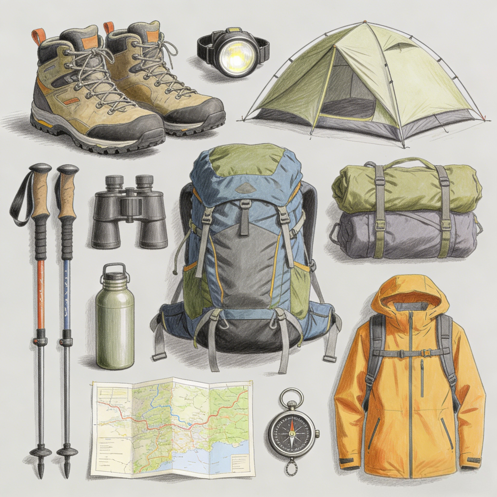
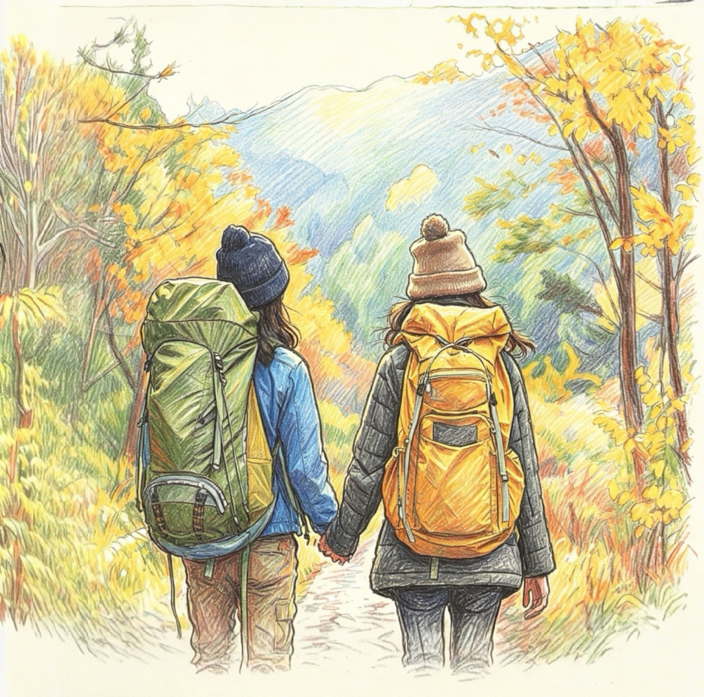
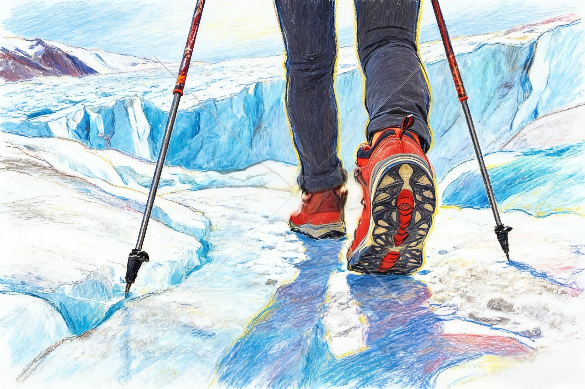

获取徒步必备知识，让您的徒步之旅更加安全、愉快



春季是徒步的好时节，气温适宜，山花烂漫。建议穿着轻便的衣物，携带防过敏药物，注意防晒。
夏季气温较高，建议选择清晨或傍晚徒步，携带足够的水分，穿着透气的衣物，注意防中暑和蚊虫叮咬。
秋季是徒步的黄金季节，天气凉爽，红叶满山。建议穿着分层衣物，携带保暖外套，欣赏秋日美景。
冬季气温较低，建议穿着保暖衣物，选择难度较低的路线，注意防滑，携带热水，避免长时间暴露在寒冷环境中。